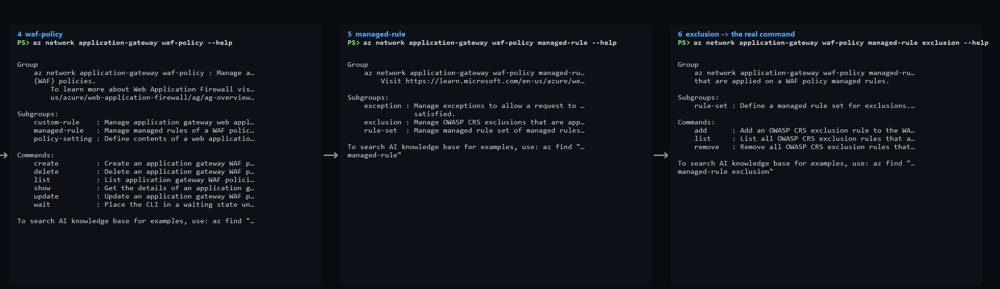
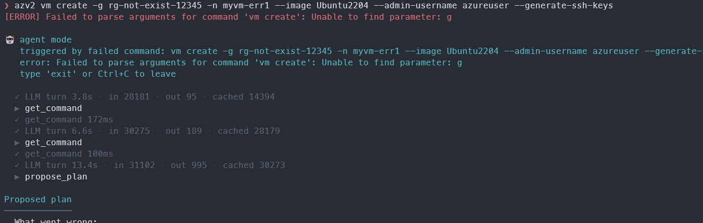

EARLY DESIGN SHARING
AI-Native CLI
Give AI its own manual.
Products now serve two users: people and the agents acting for them.
REAL AZURE CLI HELP · LEVELS 1–3
One command starts three lookups away.
 Actual
Actual az --help output, captured level by level.
REAL AZURE CLI HELP · LEVELS 4–6
And it is still three more lookups down.

Six round trips to discover one valid command path.
THE INTERFACE MISMATCH
People optimize for accuracy.
AI optimizes for relevance.
01
A person navigates
“I know the command. Give me the exact page.”
02
An AI retrieves
“Give me everything related enough to plan the next step.”
THE COST OF GUESSING
The model reaches for familiar syntax—and the product must recover.

Real recovery: classic CLI flags fail against a different command contract.
A SMALLER CONTRACT
Collapse the tree into two machine-friendly moves.
-
1
ListReturn a compact catalogue of every capability.
-
2
InspectReturn complete details for fuzzy, related matches.
THE AI MANUAL
Expose what the product already knows.
ONE SOURCE OF TRUTH
Build the tools once. Serve every AI path.
Product tools
DirectBuilt-in agent
OpenCLI + skill
Same logic. Same output. Far less maintenance.
LIVE DEMO
A model with no product knowledge can still succeed.
PS> create a resource group using the prototype CLI
cache → help → correct command
THE PRODUCT PATTERN
Every product needs two front doors.
For peopleGUI · docs · human help
+
For AIStructured tools · stable contracts
THE ASK
Ship the AI manual with the product.
Not another agent. A reliable interface for every agent.